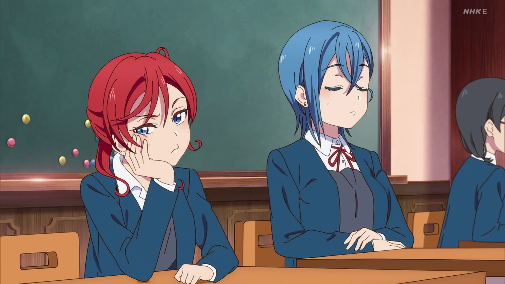

Tendencias
En esta página falta:
- Tabs de publicaciones recientes/populares
- Posicionar los temas populares
- Ver cómo se hace la estructura de la caja de publicaciones
- Hacer que el botón de Próximos cumpleaños abra un Modal Calendario
- Navidad
- Gacha
- Tier 1
- Aniversario
- Collab
Publicaciones recientes
Publicaciones populares

@Pepito93248923, hace 5 minutos
¿Habéis visto la nueva temporada de Love Live?
@Pepito93248923, hace 5 minutos
¿Habéis visto la nueva temporada de Love Live?
Temas populares
Escribir post
texto a escribir...